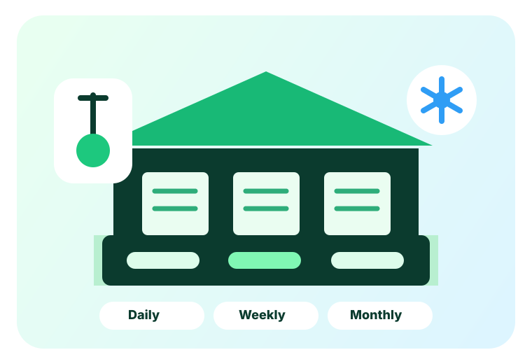

Fragmented sourcing
Farmers, traders and buyers often rely on manual networks, making quality sourcing slow and unclear.
Farmers, traders and buyers often rely on manual networks, making quality sourcing slow and unclear.
Perishable products need timely storage, temperature control and smarter logistics to reduce waste.
Market prices change quickly; agribusinesses need faster signals before buying, storing or exporting.
Export/import support needs verified connections, documentation guidance and supply-chain visibility.
Designed for farmers, suppliers, buyers, exporters, food businesses and agro-service providers who need faster access to products, storage, data and trade connections.
Match buyers with relevant farmers, suppliers and exporters based on product, volume, location, timing and trade requirements.
Track price movement, availability, demand signals and sourcing opportunities so decisions become faster and more data-driven.
Search and request flexible storage space for perishable products on daily, weekly or monthly terms.
Support trade coordination by connecting supply, buyers, logistics partners and export-readiness information.

AgroPort AI will provide cold storage rental solutions for farmers, traders, exporters and food businesses. Storage can be requested on a daily, weekly or monthly basis.
Use daily storage when products need quick holding before transport, wholesale delivery or export collection.
Use weekly storage when stock needs to be preserved while waiting for better pricing or confirmed buyer pickup.
Use monthly storage for more stable inventory planning, chilled supply management and repeated trade cycles.
AgroPort AI is positioned as a farm-to-market and farm-to-flight platform, helping users discover products, compare market signals, reserve cold storage and coordinate trade support.
List or discover agricultural products by category, region, quality and quantity.
AI suggests relevant buyers, suppliers, exporters or service partners.
Reserve cold storage for perishable goods before sales, shipment or delivery.
Coordinate documentation, logistics and buyer communication for trade execution.
Build verified connections between farmers, suppliers, buyers, exporters and agribusinesses.
Turn product, price, demand and storage data into simple business recommendations.
Research references: World Bank, FAO, Bangladesh Investment Development Authority, Export Promotion Bureau reporting and recent Bangladesh agriculture/cold-chain coverage. Verify all market figures again before investor submission.
Interested farmers, traders, exporters, cold storage owners, logistics partners and food businesses can register interest for pilot access, partnership or storage booking.